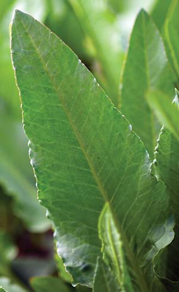

It's April here in eastern Kansas and all month I’ve been harvesting great salads thanks to five perennial plants in my garden:
Who needs to fuss with planting lettuce and spinach when these low-care perennial plants can provide such great salads? Plus, with the exception of patience dock, all these plants are readily available from garden seed companies. We are working with seed companies to add patience dock to their catalogs for 2010.
Patience dock is a terrific salad plant that anyone who enjoys salads should be growing. Heirloom veggie expert William Woys Weaver wrote about it in Zesty Sorrel: The Garden Green With Zing!, and he sent me a packet of seeds he had saved. No seed companies are currently selling it (but we hope to change that). The leaves are mild-flavored, thick like spinach but without the astringency that spinach often has.
Best of all, it is extremely easy to grow patience dock, and it's a perennial, so it'll come back each year on its own. It comes up very early in spring, so you can enjoy superearly salads. Instead of having to plant seeds each year, all you need to do is NOT let your patience sorrel drop seed (just snip off the flowers before they go to seed), or it can become invasive. As the leaves become large and perhaps tough, simply cut the plants back and new, tender leaves will quickly appear. Patience dock is an extremely long-lived plant, and is cold-hardy to at least Zone 4.
Here’s what 19th century garden writer Bernard M’Mahon had to say about this heirloom plant (American Gardener's Calendar, 1806):
The Rumex Patientia, or patience dock, being a plant that affords an early spring sallad for boiling, and being perennial in root is deserving of a place in the garden. The leaves are very large, long and succulent, and are produced in great abundance; the plant may be propagated by sowing the seed any time this month while the ground continues open, and the plants will rise freely in spring, or you may sow the seeds in March or early in April, but those sown at this time will make stronger and earlier plants; the seeds may be sown pretty thick in drills eighteen inches asunder, and covered about half an inch deep; when the plants are about two inches high, thin them to the distance of eight inches from one another, and so let them remain, always keeping them free from weeds. It may also be propagated by oftsets from the root taken off in the spring or late autumn months, and planted in rows at the above distances. By heading it down frequently during summer, as it starts to seed, you will increase the crops of foliage.
If you have grown this plant, let us know (e-mail letters@MotherEarthNews.com) if you have any growing or cooking tips.
|
 WILLIAM WOYS WEAVER Patience dock is a wonderful addition to early spring salads, and is supereasy to grow. |
|
|